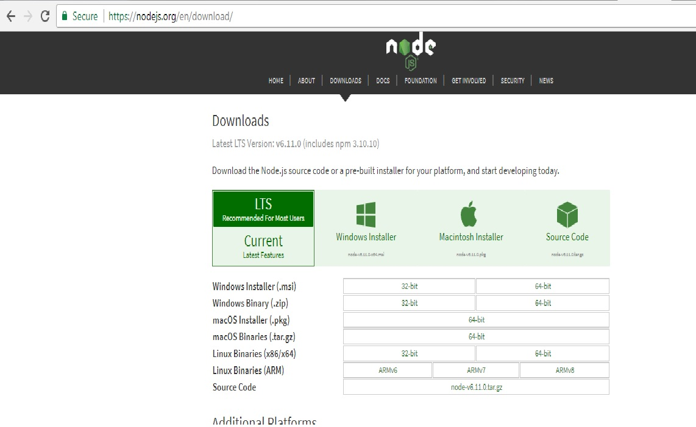
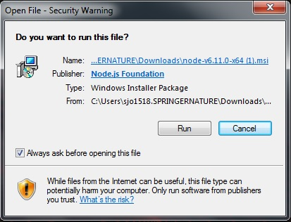
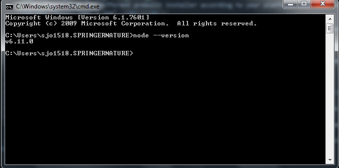
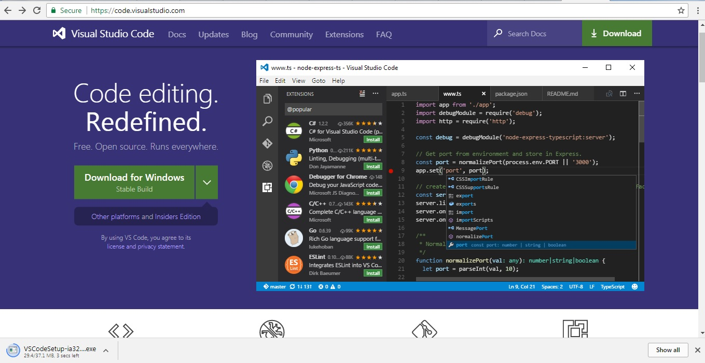
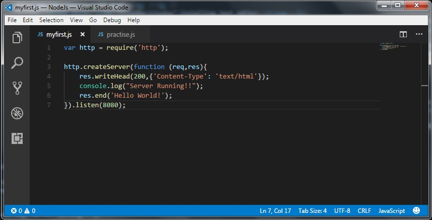
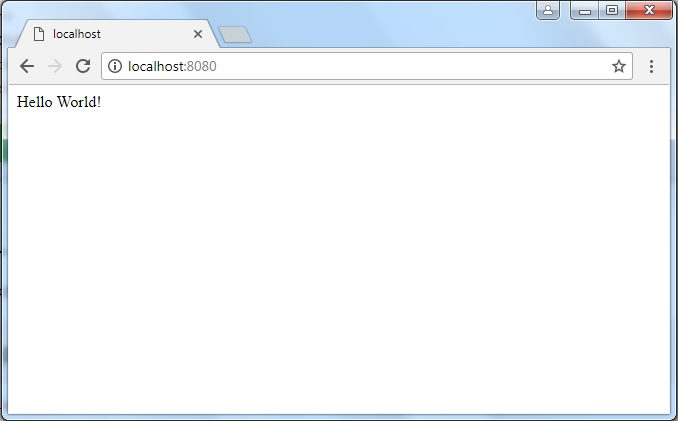

Node.js is a very powerful JavaScript-based framework/platform built on Google Chrome's JavaScript V8 Engine. Every function in Node.js is asynchronous. Therefore, everything that would normally block the thread is instead executed in the background.
Prerequisites
- Node.js is JavaScript, so we need to know Javascript in order to work with Node.js.
- Basic understanding of other web technologies such as HTML, JSON, AJAX, etc.
- Working Knowledge of Command Line.
- Install npm from your command line whenever you start a new node repo.
- Text Editors like notepad, Visual Studio Code or Brackets.
Getting Started with Node.js
Applications for Node are written in JavaScript. This is why many developers like Node because it's lightweight and you can write your front-end and back-end in the same language.
- Environment Setup
- Installing Node.js
- Installing text editor
- Creating Node.js Application
- Step 1: Import Required Module
- Step 2: Create Server
- Step 3:Make a Request to the Node.js Server
To setup environment for Node.js, you need the following two softwares available on your computer, (a) The Node.js binary installables and (b) Text Editor.
First head over to nodejs.org, we can see the different sections we have access to. We can either click on Download (recommended version).
Or choose from the different prebuilt installer according to your platform. Make sure to select the correct installer for the target platform.
Once the installer is downloaded, go ahead and start it.
Use the MSI file and follow the prompts to install the Node.js. By default, the installer uses the Node.js distribution in C:\Program Files\nodejs. The installer should set the C:\Program Files\nodejs\bin directory in window's PATH environment variable. Restart any open command prompts for the change to take effect.
Leave all the defaults options as is and finally hit install. Once it is installed go ahead and hit finish.
Verify Installation
Open command prompt or terminal and type node --version. If we see its version number than its confirmed that node is installed.
This will be used to type our program. Examples of few editors include Windows Notepad, Visual studio Code , Brakets, OS Edit command, Brief, Epsilon, EMACS, and vim or vi.
To install Visual Studio code, go to https://code.visualstudio.com/
Once it is downloaded, run the installer (VSCodeSetup-version.exe). This will only take a minute. By default, VS Code is installed under C:\Program Files (x86)\Microsoft VS Code for a 64-bit machine.
The files created with editor are called source files and contain program source code. The source files for Node.js programs are typically named with the extension ".js".
We use the require directive to load the http module and store the returned HTTP instance into an http variable as follows −
var http = require("http"); |
We call http.createServer() method to create a server instance and then we bind it at port 8080 using the listen method associated with the server instance.
Pass it a function with parameters request and response to return "Hello World!".
Name the file as myFirst.js. To execute the myFirst.js press F5 or type node myFirst.js in command prompt.
Open http://127.0.0.1:8080/ or http://localhost:8080/ in any browser and observe the following result.
Congratulations, you have your first HTTP server up and running which is responding to all the HTTP requests at port 8080.
Challenges in Node Js
- NPM
- Restarting the server
- Callback Hell
- Invoking callback more than once
- Error Handling
NPM is a dependency management tool. When npm doesn't work you often get incomprehensible errors. For this removal of the node_modules folder is suggested followed by an npm install.
It's also difficult to know which NPM library is best to use with an option of at least a dozen at your disposal.
Everytime a change is made to the server, we have to stop the server and start it again. It's kind of annoying, so to avoid this we can install npm i -g nodemon or nodemon filename.js
Asynchronous code can lead to a large set of nested callbacks, which are refered as callback hell. By nesting callbacks in such a way, we easily end up with error-prone, hard to read, and hard to maintain code. One workaround is to declare these tasks as small functions, and then link them up or this can be solved using Promises which has seperate callbacks for success and failures.
One common Node.js issue related to using callbacks is calling them more than once. Being careful is all it takes to avoid this Node.js error.
Since Node.js is a single threaded model, your code may crash if error is not handled properly or you forget to catch an exception. But you can always keep the app running by spinning up a new app in a new node.js thread.